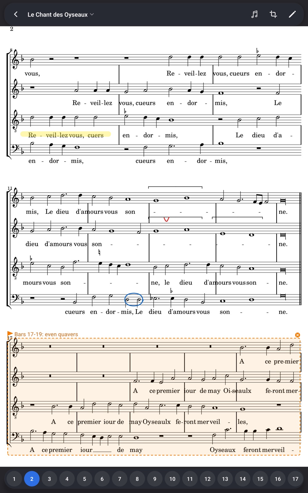
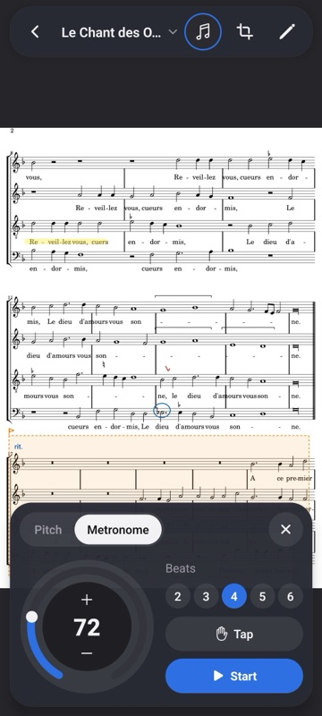
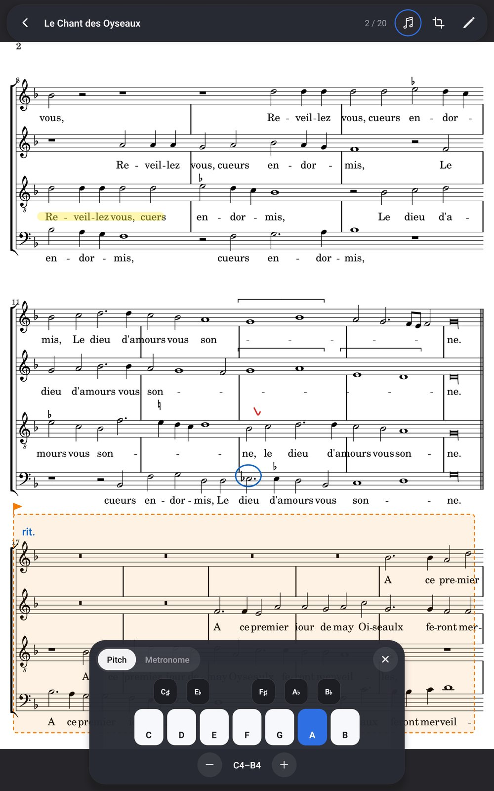
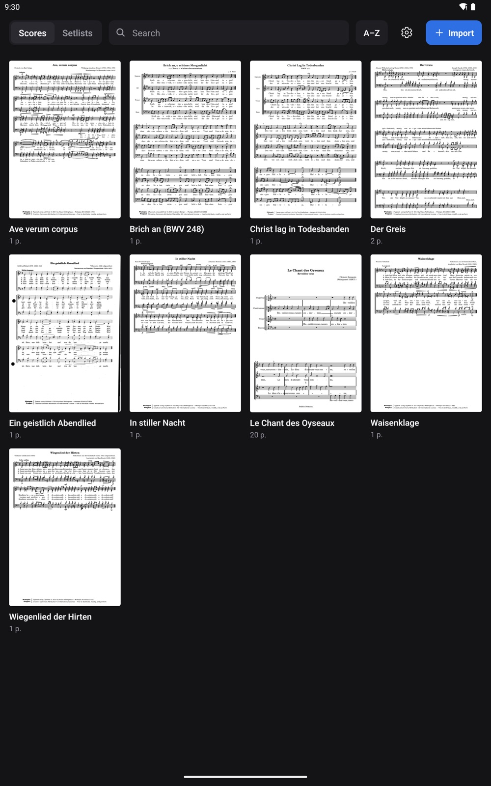
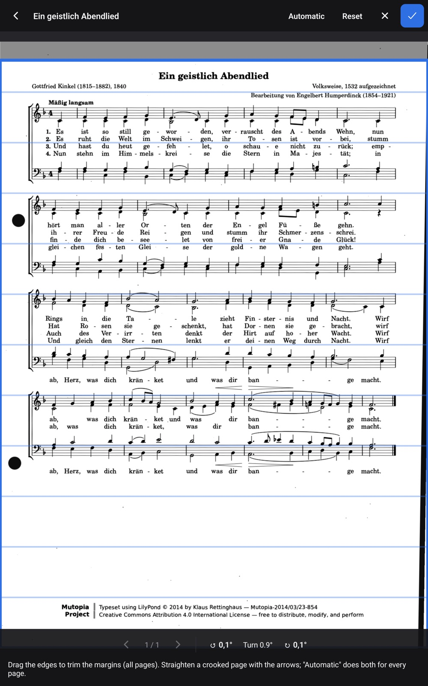
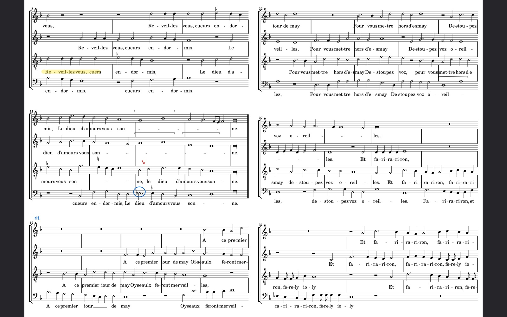
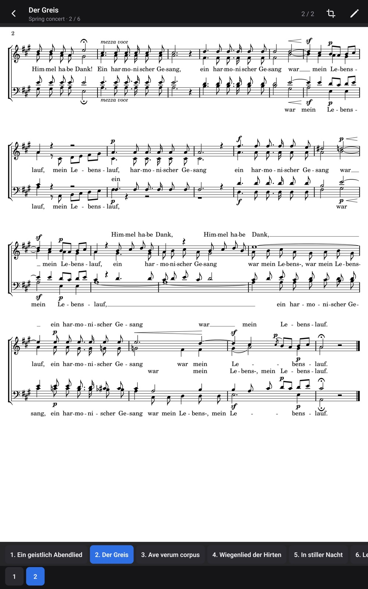
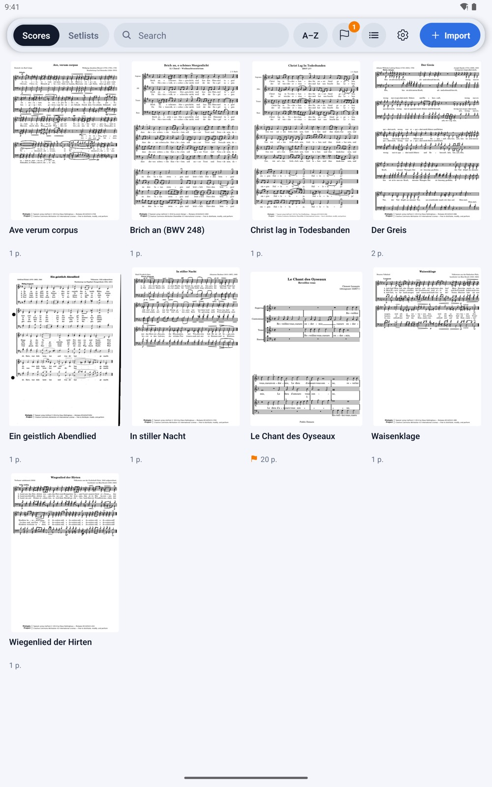

Enemmän nuottia. Vähemmän paperia.
Stavora rajaa PDF-nuoteista tyhjät marginaalit pois ja suoristaa vinot skannaukset, jotta nuotti täyttää näytön. Merkitse kynällä ja käännä sivua napautuksella tai pedaalilla – kuoroharjoituksessa, konsertissa tai kotona. Jaa settilista merkintöineen koko kuorolle yhdellä napautuksella.


Tehty harjoituksiin ja konsertteihin
Harjoituksessa nuotin pitää näkyä isona, merkintöjen pysyä tallessa ja sivun kääntyä ilman haparointia. Kaikki muu on toissijaista.
Automaattinen rajaus
Tyhjät marginaalit rajataan tuonnissa pois, myös skannatuista nuoteista. Reunoille kirjoitetut merkinnät säilyvät, rei'itykset ja roskat jäävät pois. Harmaa skannauspaperi kirkastuu valkoiseksi.
Settilistat
Kokoa konsertin ohjelma raahaamalla. Viimeisen sivun jälkeen auki tulee suoraan seuraava kappale, ja nurkassa näkyy, mitä on tulossa.
Jaa kuorolle tai bändille
Settilista, nuotit ja merkinnät yhdessä paketissa, päivitykset pelkkinä merkintöinä tai merkityt sivut PDF:nä, jonka kuka tahansa voi avata. Jokaisen omat merkinnät säilyvät.
- Muistiinpanot nuottiin Rajaa kohta laatikolla ja kirjoita muistiinpano viereen, tarvittaessa rivin- tai sivunvaihdon yli. Kirjasto näyttää kappaleet, joissa on muistiinpanoja, ja avaa suoraan oikean sivun.
- Merkinnät kynällä Kirjoita suoraan nuottiin: neljä väriä, korostuskynä, tekstimerkinnät, pyyhekumi ja kumoa. Aktiivikynällä kirjoitus alkaa heti, sormella käännät sivua. Alkuperäistä PDF:ää ei muuteta.
- Sävel ja metronomi Aloitussävel koskettimilta ja metronomi, jonka tempo asetetaan kiertämällä tai napauttamalla, nuotin päällä kelluvassa paneelissa. Jokainen kappale muistaa oman temponsa, ja äänet kuuluvat myös äänettömällä.
- Sivunkääntöpedaalit Bluetooth-pedaalit ja näppäimistöt kääntävät sivua: nuolinäppäimet, Page Up/Down, välilyönti ja Enter.
- Tiedostoista ja pilvestä Valitse kerralla useita PDF:iä laitteelta tai pilvipalvelusta, kuten iCloud Drivesta, Google Drivesta tai Dropboxista. PDF:n voi myös avata toisesta sovelluksesta suoraan Stavoraan, ja koko kansion saa tuotua ZIP-tiedostona.
- Tabletti ja puhelin Suunniteltu tabletille pystyasentoon, toimii myös puhelimessa. Vaakatasossa tabletti näyttää kaksi sivua, puhelin etenee nuottirivi kerrallaan.
Koko kuoro samalla sivulla
Kuoronjohtaja merkitsee harjoiteltavat kohdat ja jakaa settilistan merkintöineen. Jokainen saa ne omaan nuottiinsa, ja omat merkinnät pysyvät omina.



Kaikki olennainen, ei mitään ylimääräistä
Lukiessa näytöllä on vain nuotti. Työkalut tulevat esiin napauttamalla sivun keskeltä, kynätila pitämällä sormea hetken paikallaan.



Kaksi sivua kerralla
Käännä tabletti vaakaan, niin näet kaksi sivua rinnakkain ja käännät harvemmin. Merkinnät kulkevat mukana.

Konsertti yhtenä nuottina
Settilistassa kappaleet ovat peräkkäin kuin yhtenä vihkona. Sivua käännetään samalla tavalla koko konsertin ajan.
- Suoraan seuraavaan. Kappaleen viimeiseltä sivulta eteenpäin avautuu seuraavan kappaleen alku, ja taaksepäin edellisen loppu.
- Hyppää minne tahansa. Työkalurivillä näkyvät kaikki kappaleet ja sivut.
- Helppo koota. Valitse kappaleet haluamassasi järjestyksessä ja järjestä niitä raahaamalla. ZIP-tiedostona tuodusta kansiosta saa settilistan suoraan tuonnissa.

Vaalea tai tumma
Stavora seuraa laitteen asetusta, tai valitset itse. Sivun ympäristö pysyy sellaisena kuin sen asetat – vaikka tummana konsertissa.

Näin pääset alkuun
Ei tilejä, ei rekisteröitymistä.
Tuo nuotit
Valitse PDF:t laitteelta tai pilvipalvelusta, tai avaa ne toisesta sovelluksesta suoraan Stavoraan.
Lue ja merkitse
Nuotti on valmiiksi rajattu. Merkitse kynällä, mitä johtaja sanoo.
Kokoa settilista
Konsertissa sivu kääntyy kappaleesta toiseen napautuksella tai pedaalilla.
Nuottisi pysyvät sinulla
Stavora toimii kokonaan laitteellasi.
- Ei käyttäjätiliä, ei mainoksia eikä seurantaa.
- PDF:t ja merkinnät tallentuvat vain laitteelle. Ne lähtevät sieltä vain, kun itse jaat ne.
- PDF:t piirtää käyttöjärjestelmän oma PDF-moottori.
- Varmuuskopio on yksi ZIP-tiedosto, jonka tallennat itse haluamaasi paikkaan.

Tulossa pian
Stavora on testivaiheessa iPadilla ja Android-tableteilla. Puhelimessakin se toimii, kun tabletti jää kotiin. Kauppoihin se tulee pian.